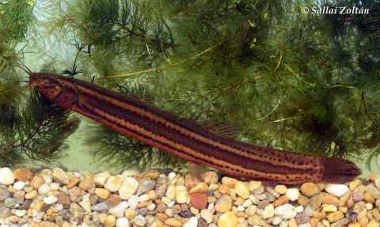
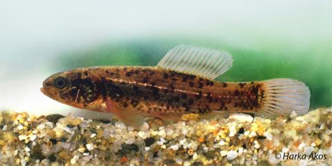
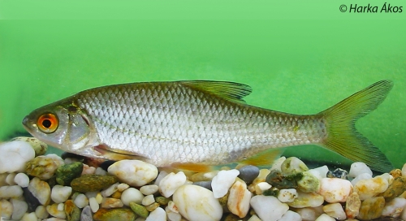
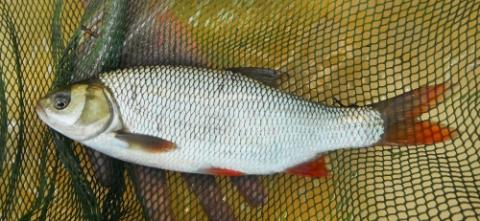
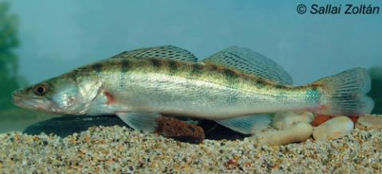

Az Év Hala Magyarországon választást a Magyar Haltani Társaság kezdeményezi 2010 óta, hogy így is felhívja a figyelmet egyes halfajok jelentőségére, vagy esetleges veszélyeztetett voltára.
A Magyar Haltani Társaság elnöksége három jelöltet állít minden évben az év hala címért folyó versenyben, a végső döntést azonban a honlap szavazói hozzák meg. Az a hal lesz a győztes, amelyik az adott év december 31-ig a legtöbb szavazatot kapja.

A réticsík erősen megnyúlt, vaskos testű halunk. Alapszíne okkersárga, a háta sötétbarna. Fejét barnásfekete foltok, az oldalát ugyanilyen színű hosszanti sávok és pettyek díszítik. Szemei kicsik, alsó állású szája sem nagy, ám körülötte öt pár bajuszszál található. Lekerekített úszói ugyancsak kicsik, de igen gyors és erőteljes kígyózó mozgásra képes. Jellemzője, hogy oxigénszegény viszonyok közt is megél, mert vérerekben gazdag utóbele képes oxigént felvenni a lenyelt levegőből. A saját maga által kimélyített gödrökben még akkor is életben maradhat, amikor a mocsár vize eltűnik s a lágy iszap felszíne cserepesre szárad. Csíkra éhes elődeink ilyenkor ásóval, kapával forgatták ki a földből.
Amíg nagy lápjaink és mocsaraink „éltek”, népélelmezési cikknek számított a réticsík. A növényekben gazdag, iszapos medrű vizekben ma is sokfelé megtalálható, de az állományai kicsinyek és veszélyeztetettek, ezért védettek. A faj természetvédelmi értéke példányonként 10 ezer forint.

A lápi póc apró termetű, zömök testű halunk, mely kissé nyújtott, oldalról lapított. Farokúszója szabályosan lekerekített, kerekded mellúszóit, valamint az úszóiban található úszósugarakat egymástól külön-külön is képes mozgatni. Ezen sajátosságának köszönheti a "kutyahal" elnevezést, de a köznyelvben ismeretes a ribahal, a pócikhal, valamint a bobály megnevezése is. Termetéhez képest testét viszonylag nagyobb méretű pikkelyek borítják, alap barnás színezetét az oldalvonala helyén elhelyezkedő, fémesen csillogó aranysárga csík díszíti. Enyhén felső állású szájában apró fogacskákból álló kefefogazat található, aminek segítségével bolharákokat, rovarlárvákat vagy halivadékokat zsákmányol. Élőhelyeként, mint ahogyan azt neve is mutatja, a dús növényzetű mocsarakat és lápokat részesíti előnyben. Szaporodására tavasszal kerül sor, jellegzetes násztáncukat követően a nőstény őrködik az ikrákat rejtő fészek felett. A vízszabályozási munkálatokat követően az egykor tömeges állománnyal bíró faj mind élőhelyének kiterjedése, mind a faj hazai állományainak mérete jelentősen lecsökkent. Fennmaradt állományai mára egymástól elszigetelten, holtágakban, tőzeglápokban, sekély vizű tavakban, kisebb vízfolyásokban és csatornákban vannak jelen. A lápi póc további fennmaradását az egyre gyakoribbá váló száraz periódusok, valamint a Kelet-Ázsiából származó inváziós amurgéb is fenyegeti. Természetvédelmi szempontból igen értékes, fokozottan védett, bennszülött halfajunk, eszmei értéke példányonként 250 000 Ft.

A bodorka viszonylag kisebb termetű halfajunk, testhossza maximálisan a 15-20 centimétert érheti el. A kevésbé gyakorlott szemek számára is könnyen felismerhető halfajjá teszi a narancssárgás-vöröses szemgyűrűje, valamint a hasonló színekben pompázó alsó úszói. Szája csúcsba nyíló, hát- és hasúszója egyvonalban ered, mely alapján biztosan el lehet különíteni a hasonló megjelenésű vörösszárnyú keszegtől. Ívási időszakban főleg a hínárnövényzet nyújtotta biztonságos helyeket keresi fel ikrák lerakásához. A fiatal egyedek étlapján kezdetben planktonszervezetek, később férgek, rákok és rovarlárvák szerepelnek. Hegyvidéki patakjaink, valamint gyors áramlású vízfolyásaink kivételével szinte mindenhol előfordul, viszonylag nagyobb egyedszámban, ebből adódóan a ragadozóhalaink kedvelt tápláléka. Horgászati szempontból igen kedves halfaj sok horgász számára, az első horgászzsákmányok és élmények között tarthatják számon. A nagyobb példányok a keszeghorgászatok üdvözölt zsákmányai, valamint széles körben használt csalihalként is a ragadozóhalas horgászatok során. A hazai horgászrekord 1,9 kg (2000). Gasztronómiai tekintetben sűrűn beirdalva, paprikás lisztben megforgatva és forró, bő olajban kisütve kiváló étel készíthető belőle.

A világos pikkelyei miatt Herman Ottó által még ónos jásznak nevezett jászkeszeg ezüstös színű pontyfélénk. Az alsó úszói többnyire rőtes-pirosas színűek, ezért gyakran összetévesztik a bodorkával vagy a vörösszárnyú keszeggel. A jászkeszeg pikkelyei azonban apróbbak ezért az oldalvonalán mindig 55-nél több számolható, míg a másik két fajnál 50-nél kevesebb.
Táplálékát zömmel az üledékben rejtőző gerinctelen állatok, férgek puhatestűek alkotják. Áramláskedvelő faj, de a gyakran felfrissülő tavakban is megtalálható, amilyen például a Tisza-tó, a Balatonban azonban ritkaság. Ívásuk késő tavasszal történik, ezért április 15-től május 31-ig a fogásuk tilos. Ikrájukat a sóderes mederfenékre vagy a vízi növényzetre rakják. Közepes termetű halunk, a kifogható legkisebb mérete 20 cm, de a 30 cm fölöttiek sem ritkák A húsa szálkás, de ízletes. A hazai horgászrekord 3,86 kg (1995).

A süllő (Sander lucioperca) nagyra növő, megnyúlt testű, oldalról enyhén lapított halunk. Csúcsba nyíló szája nagy, a szeglete eléri a szem hátulsó vonalát. Benne nagy, erős fogak ülnek, köztük a többiek közül kiemelkedő ebfogak is. Oldalán elmosódó sötétebb sávok, néha foltok találhatók. Két hátúszóját, valamint farokúszóját fekete foltsorok díszítik.
Hazánkban viszonylag széles körben elterjedt, nagyobb folyóink paduczónájától egészen a dévérzónáig gyakori, kisebb folyóinkban azonban csak a bővebb vizű alsóbb szakaszokon lehet rá számítani. A víz oldott oxigéntartalmára érzékeny, ezért kerüli a duzzasztott, feliszapolódott folyószakaszokat, állóvizeink közül pedig inkább csak a jobb oxigénviszonyokkal rendelkező, nagyobb tavakban fordul elő.
A süllő valódi halevő ragadozó, táplálékának zömét elsősorban a küsz képezi. A horgászok körében a legnemesebb ragadozóként ismert, mind csalihalas, mind pergetőmódszerekkel eredményesen fogható. A hazai horgászrekord 15,5 kg (2014). Húsa szálkamentes, kiváló minőségű, a halgasztronómia egyik legkedveltebb alapanyaga.